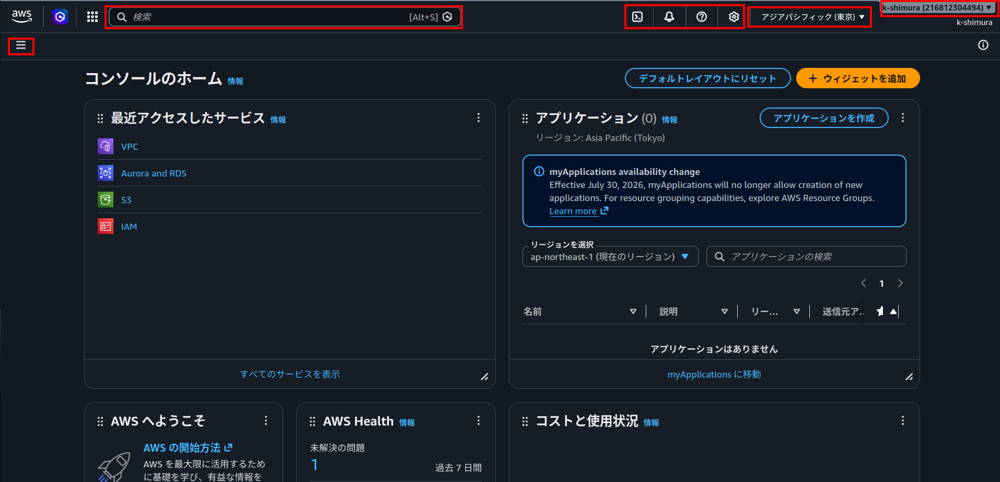
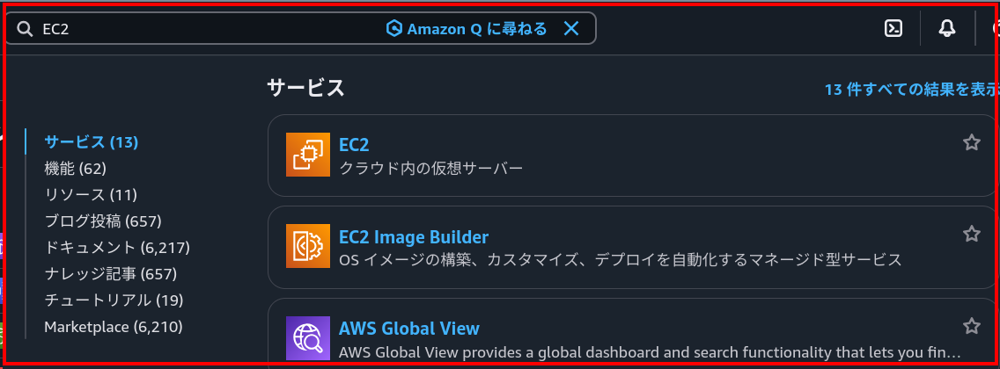
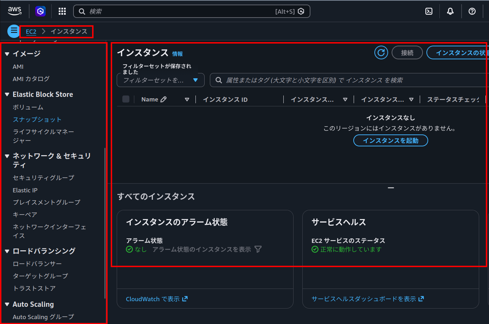
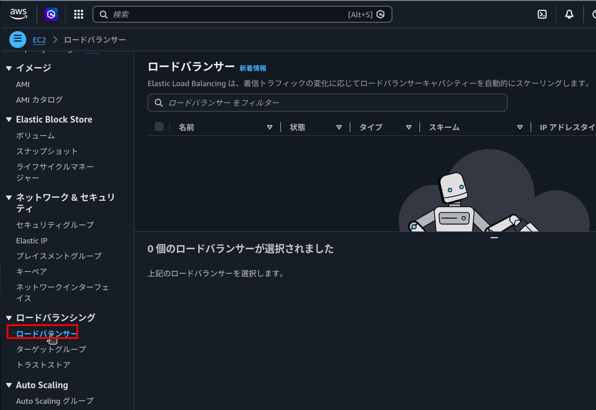
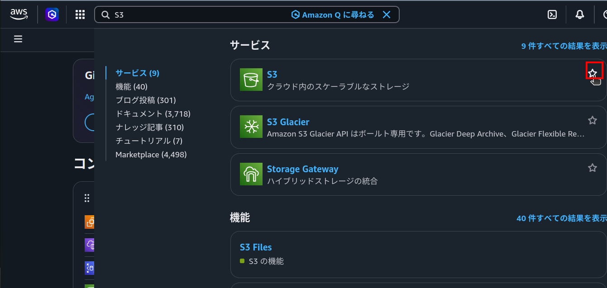
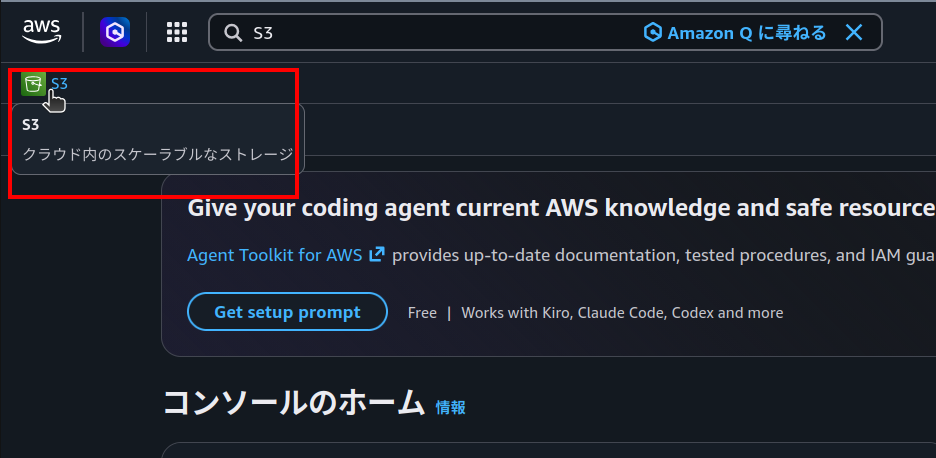
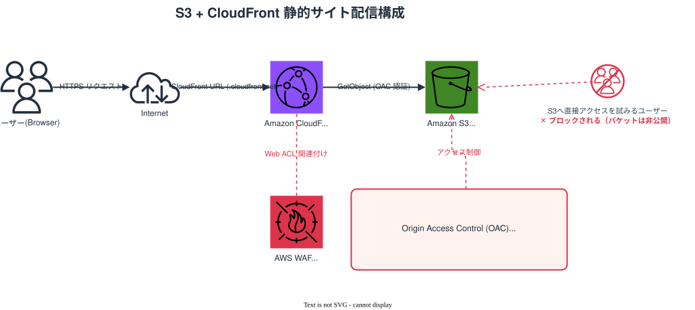

コンソール操作・IAM・S3・CloudFrontのハンズオンで「手を動かしたこと」を、
もう一度言葉で説明できるか確認するためのページです。
各章にTIPS、クイズ（ボタンを押すと回答例が出ます）、チェックリストを用意しました。
是非学びの加速にお使いください。
個別のサービスを触る前に、マネジメントコンソール自体の読み方・移動の仕方を確認します。
「どこに何があるか」が分かると、以降の章で迷いにくくなります。






Q1. あるサービスの画面から、関連する別サービスの画面へ移動する方法は、大きく分けて2つあります。それぞれ何ですか？
Q2. 「探している機能が見つからない」「作ったはずのリソースが見えない」——それぞれの場合、何を確認しますか？
「誰が」「何をできるか」を管理する仕組みです。
ユーザー・グループ・ロール・ポリシーの4つの言葉を混同しないことが最初のハードルです。
Q1. IAMポリシーとは何ですか？IAMロールとの違いを説明してください。
Q2. IAMグループとIAMロールは、どちらも「複数の対象にまとめて権限を与える」ように見えますが、使い分けの基準は何ですか？
Q3. 今回のハンズオンでは作業用IAMユーザーにAdministratorAccessを付与しました。実務で使い続けると具体的にどんな問題がありますか？
S3は「ファイルを置く場所」、CloudFrontは「ユーザーの一番近くでリクエストを受けるキャッシュ層」です。
この2つの役割分担を押さえます。
Q1. 「S3バケットを作って、フォルダを作って、ファイルを入れて」でサイトは公開されますか？
Q2. どんなケースでCloudFrontを使いますか？
Q3. S3のファイルを更新したのに、CloudFrontのURLでは古い表示のままです。なぜですか？どう反映させますか？
Q4. OAC（Origin Access Control）は何のためのものですか？S3を非公開のままにする理由と合わせて説明してください。
Q5. CloudFront経由の静的サイト構成図を思い浮かべられますか？

ここまでのハンズオンで登場したサービスについて、より深く理解したい場合はAWS SAA（ソリューションアーキテクト − アソシエイト）の書籍で該当箇所を読んでみてください。